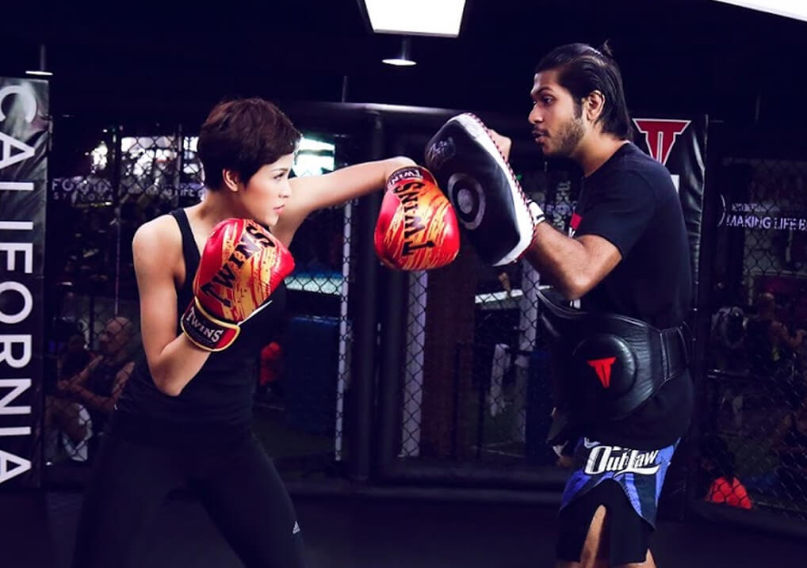
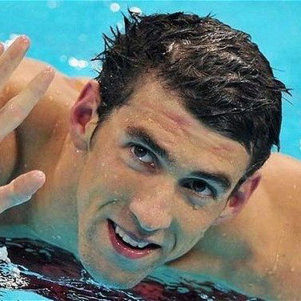

Some of the most important features of our cutting-edge facilities include the following:
- POWERED by DOLLAMUR MAT, the global leader in the mat industry, our 400 sq. m2 matted area was customized to provide an integrated training experience, ranging from Martial Arts to General Fitness within a completely safe and certified space.
- Massive Cross Training facility
- US Boxing ring
- MMA Cage
- Heavy bags, speedbags, double-end bags
- Full-size basketball court
- Mini Olympic-sized Desjoyaux swimming pool
- Fully equipped weight room
- VIP PT room
- Yoga, Spin and Group X studio
- Juice and health bar
- Open grill restaurant
- Steam and Sauna
- Spacious locker and changing room
- POWERED by DOLLAMUR MAT, the global leader in the mat industry, our 400 sq. m2 matted area was customized to provide an integrated training experience, ranging from Martial Arts to General Fitness within a completely safe and certified space.
- Massive Cross Training facility
- US Boxing ring
- MMA Cage
- Heavy bags, speedbags, double-end bags
- Full-size basketball court
- Mini Olympic-sized Desjoyaux swimming pool
- Fully equipped weight room
- VIP PT room
- Yoga, Spin and Group X studio
- Juice and health bar
- Open grill restaurant
- Steam and Sauna
- Spacious locker and changing room


INDOOR SPORTS
VOLLEY BALL

Volleyball Court Dimensions. The Volleyball court is 60 feet by 30 feet in total. ...
Center Line. A center line is marked at the center of the court dividing it equally into 30 feet squares, above which the net is placed.
Attack Line. ...
Service Line. ...
The Net. ...
Poles. ...
Ceiling Height.
TIMING
A volleyball match typically lasts between 60 and 90 minutes (about 20 minutes per game). The clock is not a factor; play continues until one team has won three games. The match begins with a serve by the player in the back of the court.
RULES
6 players on the floor at any one time - 3 in the front row and 3 in the back row
Maximum of 3 hits per side
Points are made on every serve for wining team of rally (rally-point scoring).
Player may not hit the ball twice in succession. (A block is not considered a hit.)
Ball may be played off the net during a volley and on a serve.
A ball hitting a boundary line is in.
A ball is out if it hits an antennae, the floor completely outside the court, any of the net or cables outside the antennae, the referee stand
or pole, the ceiling above a non-playable area.
It is legal to contact the ball with any part of a player’s body.
It is illegal to catch, hold or throw the ball.
A player cannot block or attack a serve from on or inside the 10-foot line.
After the serve, front-line players may switch positions at the net.
Matches are made up of sets; the number depends on level of play. 3-set matches are 2 sets to 25 points and a third set to 15. Each set must be
won by two points. The winner is the first team to win 2 sets. 5-set matches are 4 sets to 25 points and fifth set to 15. The team must win by 2 unless tournament rules dictate otherwise. The winner is the first team to win three sets.
INFORMATION
Aaron Russell is an American volleyball player, a member of the United States men's national volleyball team and Italian club Sir Safety Perugia. He winner bronze medalist of the 2016 Olympic Games.
Born: June 4, 1993 (age 24), Ellicott City, Maryland, United States
Height: 2.05 m
Weight: 98 kg
Block: 337 cm (133 in)
Position: outside hitter
Number: 8
BASKET BALL
The Rules
Basketball is a team sport. Two teams of five players each try to score by shooting a ball through a hoop elevated 10 feet above the ground. The game is played on a rectangular floor called the court, and there is a hoop at each end. The court is divided into two main sections by the mid-court line. If the offensive team puts the ball into play behind the mid-court line, it has ten seconds to get the ball over the mid-court line. If it doesn't, then the defense gets the ball. Once the offensive team gets the ball over the mid-court line, it can no longer have possession of the ball in the area in back of the line. If it does, the defense is awarded the ball.
The ball is moved down the court toward the basket by passing or dribbling. The team with the ball is called the offense. The team without the ball is called the defense. They try to steal the ball, contest shots, steal and deflect passes, and garner rebounds.
When a team makes a basket, they score two points and the ball goes to the other team. If a basket, or field goal, is made outside of the three-point arc, then that basket is worth three points. A free throw is worth one point. Free throws are awarded to a team according to some formats involving the number of fouls committed in a half and/or the type of foul committed. Fouling a shooter always results in two or three free throws being awarded the shooter, depending upon where he was when he shot. If he was beyond the three-point line, then he gets three shots. Other types of fouls do not result in free throws being awarded until a certain number have accumulated during a half. Once that number is reached, then the player who was fouled is awarded a '1-and-1' opportunity. If he makes his first free throw, he gets to attempt a second. If he misses the first shot, the ball is live on the rebound.
Each game is divided into sections. All levels have two halves. In college, each half is twenty minutes long. In high school and below, the halves are divided into eight (and sometimes, six) minute quarters. In the pros, quarters are twelve minutes long. There is a gap of several minutes between halves. Gaps between quarters are relatively short. If the score is tied at the end of regulation, then overtime periods of various lengths are played until a winner emerges.
Each team is assigned a basket or goal to defend. This means that the other basket is their scoring basket. At halftime, the teams switch goals. The game begins with one player from either team at center court. A referee will toss the ball up between the two. The player that gets his hands on the ball will tip it to a teammate. This is called a tip-off. In addition to stealing the ball from an opposing player, there are other ways for a team to get the ball.
One such way is if the other team commits a foul or violation.
The first time restriction on possession of the ball was introduced in 1933, where teams were required to advance the ball over the center line within ten seconds of gaining possession. This rule remained until 2000, when FIBA reduced the requirement to eight seconds, the NBA following suit in 2001. The NCAA retains the 10-second rule for men's play, and adopted this rule for women's play starting with the 2013–14 season.[2] U.S. high schools, whose rules are drafted by NFHS, also use the 10-second rule for both sexes.
Naismith's original rules did not specify how many players were to be on the court. In 1900, five players became standard, and players that were substituted were not allowed to re-enter the game.[citation needed] Players were allowed to re-enter a game once from 1921, and twice from 1934; such restrictions on substitutions were abolished in 1945 when substitutions became unlimited. Coaching was originally prohibited during the game, but from 1949, coaches were allowed to address players during a time-out.
Originally a player was disqualified on his second foul. This limit became four fouls in 1911 and five fouls in 1945, still the case in most forms of basketball where the normal length of the game (before any overtime periods) is 40 minutes. When the normal length is 48 minutes (this is the case with the National Basketball Association in the United States) a player is accordingly disqualified on his sixth foul.
Kobe Bean Bryant is an American businessman and a former professional basketball player. He played his entire 20-year career with the Los Angeles Lakers of the National Basketball Association.
Born: August 23, 1978 (age 39), Philadelphia, Pennsylvania, United States
Height: 1.98 m
Career end: 2016
Spouse: Vanessa Laine Bryant (m. 2001)
Did you know: Kobe Bryant holds the record of second-highest points scored in a single game (81) among all NBA players
The ball is moved down the court toward the basket by passing or dribbling. The team with the ball is called the offense. The team without the ball is called the defense. They try to steal the ball, contest shots, steal and deflect passes, and garner rebounds.
When a team makes a basket, they score two points and the ball goes to the other team. If a basket, or field goal, is made outside of the three-point arc, then that basket is worth three points. A free throw is worth one point. Free throws are awarded to a team according to some formats involving the number of fouls committed in a half and/or the type of foul committed. Fouling a shooter always results in two or three free throws being awarded the shooter, depending upon where he was when he shot. If he was beyond the three-point line, then he gets three shots. Other types of fouls do not result in free throws being awarded until a certain number have accumulated during a half. Once that number is reached, then the player who was fouled is awarded a '1-and-1' opportunity. If he makes his first free throw, he gets to attempt a second. If he misses the first shot, the ball is live on the rebound.
Each game is divided into sections. All levels have two halves. In college, each half is twenty minutes long. In high school and below, the halves are divided into eight (and sometimes, six) minute quarters. In the pros, quarters are twelve minutes long. There is a gap of several minutes between halves. Gaps between quarters are relatively short. If the score is tied at the end of regulation, then overtime periods of various lengths are played until a winner emerges.
Each team is assigned a basket or goal to defend. This means that the other basket is their scoring basket. At halftime, the teams switch goals. The game begins with one player from either team at center court. A referee will toss the ball up between the two. The player that gets his hands on the ball will tip it to a teammate. This is called a tip-off. In addition to stealing the ball from an opposing player, there are other ways for a team to get the ball.
One such way is if the other team commits a foul or violation.
TIMING
The first time restriction on possession of the ball was introduced in 1933, where teams were required to advance the ball over the center line within ten seconds of gaining possession. This rule remained until 2000, when FIBA reduced the requirement to eight seconds, the NBA following suit in 2001. The NCAA retains the 10-second rule for men's play, and adopted this rule for women's play starting with the 2013–14 season.[2] U.S. high schools, whose rules are drafted by NFHS, also use the 10-second rule for both sexes.
RULES
Naismith's original rules did not specify how many players were to be on the court. In 1900, five players became standard, and players that were substituted were not allowed to re-enter the game.[citation needed] Players were allowed to re-enter a game once from 1921, and twice from 1934; such restrictions on substitutions were abolished in 1945 when substitutions became unlimited. Coaching was originally prohibited during the game, but from 1949, coaches were allowed to address players during a time-out.
Originally a player was disqualified on his second foul. This limit became four fouls in 1911 and five fouls in 1945, still the case in most forms of basketball where the normal length of the game (before any overtime periods) is 40 minutes. When the normal length is 48 minutes (this is the case with the National Basketball Association in the United States) a player is accordingly disqualified on his sixth foul.
INFORMATION
Kobe Bean Bryant is an American businessman and a former professional basketball player. He played his entire 20-year career with the Los Angeles Lakers of the National Basketball Association.
Born: August 23, 1978 (age 39), Philadelphia, Pennsylvania, United States
Height: 1.98 m
Career end: 2016
Spouse: Vanessa Laine Bryant (m. 2001)
Did you know: Kobe Bryant holds the record of second-highest points scored in a single game (81) among all NBA players
MUAY THAI

Defenses in muay Thai are categorized in six groups:
Blocking – defender's hard blocks to stop a strike in its path so preventing it reaching its target (e.g. the shin block described in more detail below)
Redirection – defender's soft parries to change the direction of a strike (e.g. a downwards tap to a jab) so that it misses the target
Avoidance – moving a body part out of the way or range of a strike so the defender remains in range for a counter-strike. For example, the defender moves their front leg backward to avoid the attacker's low kick, then immediately counters with a roundhouse kick. Or the defender might lay their head back from the attacker's high roundhouse kick then counter-attack with a side kick.
Evasion – moving the body out of the way or range of a strike so the defender has to move close again to counter-attack, e.g. defender jumping laterally or back from attacker's kicks
Disruption – Pre-empting an attack e.g. with defender using disruptive techniques like jab, foot-thrust or low roundhouse kick, generally called a "leg kick"(to the outside or inside of the attacker's front leg, just above the knee) as the attacker attempts to close distance
Anticipation – Defender catching a strike (e.g. catching a roundhouse kick to the body) or countering it before it lands (e.g. defender's low kick to the supporting leg below as the attacker initiates a high roundhouse kick).
Punches and kicks
Defensively, the concept of "wall of defense" is used, in which shoulders, arms and legs are used to hinder the attacker from successfully executing techniques. Blocking is a critical element in muay Thai and compounds the level of conditioning a successful practitioner must possess. Low and mid body roundhouse kicks are normally blocked with the upper portion of a raised shin (this block is known as a 'check'). High body strikes are blocked ideally with the forearms and shoulder together, or if enough time is allowed for a parry, the glove (elusively), elbow, or shin will be used. Midsection roundhouse kicks can also be caught/trapped, allowing for a sweep or counter-attack to the remaining leg of the opponent. Punches are blocked with an ordinary boxing guard and techniques similar, if not identical, to basic boxing technique. A common means of blocking a punch is using the hand on the same side as the oncoming punch. For example, if an orthodox fighter throws a jab (being the left hand), the defender will make a slight tap to redirect the punch's angle with the right hand. The deflection is always as small and precise as possible to avoid unnecessary energy expenditure and return the hand to the guard as quickly as possible. Hooks are often blocked with a motion sometimes described as "combing the hair", that is, raising the elbow forward and effectively shielding the head with the forearm, flexed biceps and shoulder. More advanced muay Thai blocks are usually in the form of counter-strikes, using the opponents weight (as they strike) to amplify the damage that the countering opponent can deliver. This requires impeccable timing and thus can generally only be learned by many repetitions.
Like most competitive full contact fighting sports, muay Thai has a heavy focus on body conditioning.[14] Muay Thai is specifically designed to promote the level of fitness and toughness required for ring competition. Training regimens include many staples of combat sport conditioning such as running, shadowboxing, rope jumping, body weight resistance exercises, medicine ball exercises, abdominal exercises, and in some cases weight training. Thai boxers rely heavily on kicks utilizing the shin bone. As such, practitioners of Muay Thai will repeatedly hit a dense heavy bag with their shins, conditioning it, hardening the bone through a process called cortical remodeling.[15] Striking a sand filled bag will also have the same effect. A fighter before a round Training that is specific to a Thai fighter includes training with coaches on Thai Pads, focus mitts, heavy bag, and sparring. The daily training includes many rounds (3–5 minute periods broken up by a short rest, often 1–2 minutes) of these various methods of practice. Thai Pad training is a cornerstone of muay Thai conditioning which involves practicing punches, kicks, knees, and elbow strikes with a trainer wearing thick pads which cover the forearms and hands. These special pads (often referred to as Thai pads) are used to absorb the impact of the fighter’s strikes and allow the fighter to react to the attacks of the pad holder in a live situation. The trainer will often also wear a belly pad around the abdominal area so that the fighter can attack with straight kicks or knees to the body at any time during the round. Focus mitts are specific to training a fighter’s hand speed, punch combinations, timing, punching power, defense, and counter-punching and may also be used to practice elbow strikes. Heavy bag training is a conditioning and power exercise that reinforces the techniques practiced on the pads. Sparring is a means to test technique, skills, range, strategy, and timing against a partner. Sparring is often a light to medium contact exercise because competitive fighters on a full schedule are not advised to risk injury by sparring hard. Specific tactics and strategies can be trained with sparring including in close fighting, clinching and kneeing only, cutting off the ring, or using reach and distance to keep an aggressive fighter away. Due to the rigorous training regimen (some Thai boxers fight almost every other week) professional boxers in Thailand have relatively short careers in the ring. Many retire from competition to begin instructing the next generation of Thai fighters. Most professional Thai boxers come from the lower economic backgrounds, and the fight money (after the other parties get their cut) is sought as means of support for the fighters and their families.[16] Very few higher economic strata Thais join the professional Muay Thai ranks; they usually either do not practice the sport or practice it only as amateur Muay Thai boxers.[17][18]
Sombat Banchamek AKA Buakaw Banchamek is a Thai welterweight Muay Thai kickboxer, who formerly fought out of Por. Pramuk Gym, in Bangkok, Thailand, under the ring name Buakaw Por. Pramuk.
Born: May 8, 1982 (age 35), Samrong Thap District, Thailand
Height: 1.74 m
Weight: 72 kg
Total: 268
Division: Welterweight, Lightweight, Featherweight, Middleweight
TIMING AND RULES
Like most competitive full contact fighting sports, muay Thai has a heavy focus on body conditioning.[14] Muay Thai is specifically designed to promote the level of fitness and toughness required for ring competition. Training regimens include many staples of combat sport conditioning such as running, shadowboxing, rope jumping, body weight resistance exercises, medicine ball exercises, abdominal exercises, and in some cases weight training. Thai boxers rely heavily on kicks utilizing the shin bone. As such, practitioners of Muay Thai will repeatedly hit a dense heavy bag with their shins, conditioning it, hardening the bone through a process called cortical remodeling.[15] Striking a sand filled bag will also have the same effect. A fighter before a round Training that is specific to a Thai fighter includes training with coaches on Thai Pads, focus mitts, heavy bag, and sparring. The daily training includes many rounds (3–5 minute periods broken up by a short rest, often 1–2 minutes) of these various methods of practice. Thai Pad training is a cornerstone of muay Thai conditioning which involves practicing punches, kicks, knees, and elbow strikes with a trainer wearing thick pads which cover the forearms and hands. These special pads (often referred to as Thai pads) are used to absorb the impact of the fighter’s strikes and allow the fighter to react to the attacks of the pad holder in a live situation. The trainer will often also wear a belly pad around the abdominal area so that the fighter can attack with straight kicks or knees to the body at any time during the round. Focus mitts are specific to training a fighter’s hand speed, punch combinations, timing, punching power, defense, and counter-punching and may also be used to practice elbow strikes. Heavy bag training is a conditioning and power exercise that reinforces the techniques practiced on the pads. Sparring is a means to test technique, skills, range, strategy, and timing against a partner. Sparring is often a light to medium contact exercise because competitive fighters on a full schedule are not advised to risk injury by sparring hard. Specific tactics and strategies can be trained with sparring including in close fighting, clinching and kneeing only, cutting off the ring, or using reach and distance to keep an aggressive fighter away. Due to the rigorous training regimen (some Thai boxers fight almost every other week) professional boxers in Thailand have relatively short careers in the ring. Many retire from competition to begin instructing the next generation of Thai fighters. Most professional Thai boxers come from the lower economic backgrounds, and the fight money (after the other parties get their cut) is sought as means of support for the fighters and their families.[16] Very few higher economic strata Thais join the professional Muay Thai ranks; they usually either do not practice the sport or practice it only as amateur Muay Thai boxers.[17][18]
INFORMATION
Sombat Banchamek AKA Buakaw Banchamek is a Thai welterweight Muay Thai kickboxer, who formerly fought out of Por. Pramuk Gym, in Bangkok, Thailand, under the ring name Buakaw Por. Pramuk.
Born: May 8, 1982 (age 35), Samrong Thap District, Thailand
Height: 1.74 m
Weight: 72 kg
Total: 268
Division: Welterweight, Lightweight, Featherweight, Middleweight
GYMMING
RULES
Exercise isn’t an exact science—think different strokes for different folks. But one fact rings true: Something is better than nothing. A healthy exercise habit should blend fun and fitness, effort with results. That’s where these 23 tips come in. Instead of dreading the gym, learn to streamline the process using these healthy exercise habits to get more out a workout than ever before. Finding Fitness—Your Action Plan
1. Commit. Yoda said it best: “Do or do not, there is no try.” Don’t straddle the line between wanting to get fit and actually doing something about it. Take the first step towards healthier habits and commit to a 30-day fitness challenge . Go for a walk or run on Monday, Wednesday, and Friday. Then perform a circuit of at least five bodyweight exercises on Tuesday and Thursday. Keep it up for a
2. Make a plan. Without a good game plan, a trip to the gym can quickly become a complete waste of time. To avoid wandering aimlessly from one piece of equipment to the next, map out your workouts ahead of time and set clear training goals . When workouts have a purpose, we’re more able to balance sweating with socializing (yes, it’s OK to laugh a little—in fact, we encourage it!).
3. Stay on schedule. Habits don’t just happen, they’re formed. Figure out when there’s time for exercise—first thing in the morning, at lunch, or after work. But don’t stress; there is no right time to work out. Consistency is the real game-changer. Prioritize exercise, and form a healthy habit by sticking to the schedule every day .
INFORMATION AND RULES
DJ trainer Certified from the National Institute of Sports Medicine (NASM) USA 25 years of sports training in the United States, Germany, Hong Kong, Malaysia, Singapore, and now Vietnam at California Fitness & Yoga Centers. Train for many top stars.
OUTDOOR SPORTS
TENNIS
RULES
Rules of tennis (ITF) The International Tennis Federation regulates the rules of tennis. The complete Rules of Tennis are available on the ITF website. Rule Books are available from your Member Association. Tennis Australia dress and equipment regulations Like most sports in Australia, tennis has certain requirements for players’ dress and equipment. These requirements vary depending on the type and nature of the event. Find out more about Dress and equipment regulations Tennis etiquette and rules for non-umpired matches The Rules of Tennis, as published by the ITF, assure the presence of a Chair Umpire or other officials to determine and interpret particular situations. Rules for non-umpired matches cover certain situations where players are determining their own matches. Learn more about tennis etiquette and rules for non-umpired matches Correcting errors The correcting errors documents provide clear answers to situations where a Rules of Tennis error is made. Find out more about correcting errors
TIMING
One of the matches we scrutinized was a second-round, four-setter between Leonardo Mayer and defending champion Andy Murray. It lasted two hours and 41 minutes—three minutes shorter than the average men's singles match at last year's U.S. Open. Mayer and Murray actively played for 26 minutes and 29 seconds, or 16.4% of the time. There's plenty of down time in tennis. Players take breaks at changeovers and between sets. They argue and challenge rulings. But most of the down time was spent between points, when players strolled around, toweled off and bounced balls before serving. We also broke out the stopwatch for another match, a one-hour-and-26-minute women's doubles tilt between Daniela Hantuchova and Martina Hingis and the world's top-ranked team of Sara Errani and Roberta Vinci. We figured there would be more down time in doubles, since teammates discuss strategy before every point. But compared with the men's singles match, this one featured plenty of action, with 16 minutes and 50 seconds of tennis, or 19.6% of the match time. The women served fewer aces and hit fewer service winners, resulting in more prolonged points.
INFORMATION
Novak Djokovic is a Serbian professional tennis player who is currently ranked world No. 13 in men's singles tennis by the Association of Tennis Professionals.
Born: May 22, 1987 (age 30), Belgrade, Serbia
Height: 1.88 m
Coach: Andre Agassi; Radek Štěpánek; Mario Ančić
Tour Finals: W (2008, 2012, 2013, 2014, 2015)
Spouse: Jelena Djokovic (m. 2014)
Olympic Games: SF (2008, 2012)
TENNIS
RULES
Running is a method of terrestrial locomotion allowing humans and other animals to move rapidly on foot. Running is a type of gait characterized by an aerial phase in which all feet are above the ground (though there are exceptions[1]). This is in contrast to walking, where one foot is always in contact with the ground, the legs are kept mostly straight and the center of gravity vaults over the stance leg or legs in an inverted pendulum fashion.[2] A characteristic feature of a running body from the viewpoint of spring-mass mechanics is that changes in kinetic and potential energy within a stride occur simultaneously, with energy storage accomplished by springy tendons and passive muscle elasticity.[3] The term running can refer to any of a variety of speeds ranging from jogging to sprinting. It is assumed that the ancestors of humankind developed the ability to run for long distances about 2.6 million years ago, probably in order to hunt animals.[4] Competitive running grew out of religious festivals in various areas. Records of competitive racing date back to the Tailteann Games in Ireland in 1829 BCE,[5][citation needed] while the first recorded Olympic Games took place in 776 BCE. Running has been described as the world's most accessible sport.[6]
INFORMATION
If Anh Vien is successful in the expectations of fans, Nguyen Thi Huyen is a big surprise. Nam Dinh athletes are not invested specifically as teammate Quach Thi Lan but shines brightly in SEA Games 28. The girl born in 1993 won three gold medals in the 400 meters, 400 meters and 4x 400 meters meters. women. Nguyen Thi Huyen broke a SEA Games record and qualified for the 2016 Olympic Games to run two personalities. The gold medal of Nguyen Thi Huyen contributed to the unprecedented success of the Vietnamese athletes in a congress (won a total of 11 HC gold).
SWIMMING
RULES
Swimming is an individual or team sport that requires the use of ones arms and legs to move the body through water. The sport takes place in pools or open water (e.g., in a sea or lake). Competitive swimming is one of the most popular Olympic sports,[1] with varied distance events in butterfly, backstroke, breaststroke, freestyle, and individual medley. In addition to these individual events, four swimmers can take part in either a freestyle or medley relay. Swimming each stroke requires a set of specific techniques, and in competition, there are distinct regulations concerning the acceptable form for each individual stroke.[2] There are also regulations on what types of swimsuits, caps, jewelry and injury tape that are allowed at competitions. Although it is possible for competitive swimmers to incur several injuries from the sport -- such as tendinitis in the shoulders or knees -- there are also multiple health benefits associated with the sport.

INFORMATION
Michael Fred Phelps II (born June 30, 1985) is an American competition swimmer and the most decorated Olympian of all time, with a total of 22 medals. Phelps also holds the all-time records for Olympic gold medals (18, double the second highest record holders), Olympic gold medals in individual events (11), and Olympic medals in individual events for a male (13). In winning eight gold medals at the 2008 Beijing Games, Phelps took the record for the most first-place finishes at any single Olympic Games. Five of those victories were in individual events, tying the single Games record. In the 2012 Summer Olympics in London, Phelps won four golds and two silver medals, making him the most successful athlete of the Games for the third Olympics in a row. Phelps is the long course world recordholder in the 100-meter butterfly, 200-meter butterfly and 400-meter individual medley as well as the former long course world recordholder in the 200-meter freestyle and 200-meter individual medley. He has won a total of 77 medals in major international long-course competition, totalling 61 gold, 13 silver, and 3 bronze spanning the Olympics, the World, and the Pan Pacific Championships.
RECREATION
ROCK CLIMBING

Rock climbing is an activity in which participants climb up, down or across natural rock formations or artificial rock walls. The goal is to reach the summit of a formation or the endpoint of a usually pre-defined route without falling. Due to the length and extended endurance required and because accidents are more likely to happen on the descent than the ascent, rock climbers do not usually climb back down the route. It is very rare for a climber to downclimb, especially on the larger multiple pitches (class III- IV and /or multi-day grades IV-VI climbs). Professional rock climbing competitions have the objectives of either completing the route in the quickest possible time or attaining the farthest point on an increasingly difficult route. Scrambling, another activity involving the scaling of hills and similar formations, is similar to rock climbing. However, rock climbing is generally differentiated by its sustained use of hands to support the climber's weight as well as to provide balance.
Rock climbing is a physically and mentally demanding sport, one that often tests a climber's strength, endurance, agility and balance along with mental control. It can be a dangerous activity and knowledge of proper climbing techniques and use of specialized climbing equipment is crucial for the safe completion of routes. Because of the wide range and variety of rock formations around the world, rock climbing has been separated into several different styles and sub-disciplines.[1]
Lead climbing is a climbing technique. The lead climber ascends with the rope passing through intermittent anchors that are below them, rather than through a top anchor, as in a top-roped climb. A partner belays from below the lead climber, by feeding out enough rope to allow upward progression without undue slack. As the leader progresses they clip the rope into, using a runner and carabiners, intermediate points of protection such as active cams, or passive protection such as nuts; this limits the length of a potential fall. The leader also may clip into pre-placed bolts. Indoor gyms might have short runners pre-attached to fixed anchor points in the wall. Unlike top-rope climbing where the climber is always supported by an anchor located above the climber, lead climbing often has scenarios where the climber will be attached to a point under him or her. In these cases, if the climber were to fall, the distance fallen would be much greater than that of top-rope and this is one of the main reasons lead climbing can be dangerous. The fall factor is the ratio of the height a climber falls and the length of rope available to absorb the fall. The higher the fall factor, the more force placed on the climber as the ropes decelerates them. The maximum fall factor is 2. It is often advised that climbers who are interested in lead climbing should learn from experienced climbers and participate in training sessions before actually lead climbing on their own. Multi-pitch[edit]
Main article: Multi-pitch climbing The climbing rope is of a fixed length; the climber can only climb the length of the rope. Routes longer than the rope length are broken up into several segments called pitches; this is known as multi-pitch climbing. At the top of a pitch, the leader, the first climber to ascend, sets up an anchor and then belays the second climber up to the anchor; as the second climber follows the route taken by the leader, the second climber removes (cleans) the carabiners and anchors placed along the way in order to use them again on the next pitch. Once both climbers are at the top anchor, the leader begins climbing the next pitch and so on until the top of the route is reached. In either case, upon completion of a route, climbers can walk back down if an alternate descent path exists, or rappel (abseil) down with the rope. Sport[edit]
Main article: Sport climbing Unlike traditional rock climbing, sport climbing involves the use of protection (bolts) placed with power drills or on rappel or permanent anchors which are attached to the rock walls. This is separate from bolted trad face climbing. Traditional[edit] Main article: Traditional climbing Traditional or trad climbing involves rock climbing routes in which protection against falls is placed by the climber while ascending, or bolts placed on lead. Gear called cams, hexes, nuts is used to protect against falls but not to aid the ascent directly. Traditional bolted face climbs are different than sport climbs. Trad bolted climbs use either a hand drill and or are bolted on lead. This means there are far fewer bolts and they are spaced out farther than sport climbs. Top rope[edit]
Top roping Balthazar (12), in the Morialta Conservation Park near Adelaide, South Australia. Top roping is the most accessible style of climbing for beginners. Commonly known as "Top Roping": belaying a climber from the ground or the base of the route. A belay system resembling a pulley in which an anchor has been created at the top of a climb, through which the rope runs through from the belayer on the ground, to the climber on the ground (position before starting the climb). The rope is "taken-in", to clear up the slack as the climber moves upwards, so in the event of a fall, the climber falls the shortest distance possible. The length of a fall is normally no more than a meter, but can vary depending on the length of the route (the longer the rope, the more stretch the rope will undergo when weighted) and the weight of the climber compared to that of the belayer, among other things. Top belaying[edit] Belaying a climber from the top of a route, bringing them up to walk off or continue on to next pitch. A similarly safe system of climbing a route as top-roping, except the belayer has set the anchors at the top of the climb (normally after leading a route, in which case the climber is "seconding") to belay the climber either indirectly (belayer is part of the system and can be vulnerable when exposed to unexpected directions of pull and loading of the rope) or directly (belayer is not part of the system and belaying is done directly from the anchors using either an Italian / Munter Hitch or adapted use of a belay device), up the route from the top. If bolts have been clipped or traditional gear placements have been made, it is the job of the climber to collect and clean the route. Via ferrata[edit]
Main article: Via ferrata A method of fairly easily ascending a route, heavily dependent on permanent protection rather than using natural rock features to proceed.
Rock climbing is a physically and mentally demanding sport, one that often tests a climber's strength, endurance, agility and balance along with mental control. It can be a dangerous activity and knowledge of proper climbing techniques and use of specialized climbing equipment is crucial for the safe completion of routes. Because of the wide range and variety of rock formations around the world, rock climbing has been separated into several different styles and sub-disciplines.[1]
Lead climbing is a climbing technique. The lead climber ascends with the rope passing through intermittent anchors that are below them, rather than through a top anchor, as in a top-roped climb. A partner belays from below the lead climber, by feeding out enough rope to allow upward progression without undue slack. As the leader progresses they clip the rope into, using a runner and carabiners, intermediate points of protection such as active cams, or passive protection such as nuts; this limits the length of a potential fall. The leader also may clip into pre-placed bolts. Indoor gyms might have short runners pre-attached to fixed anchor points in the wall. Unlike top-rope climbing where the climber is always supported by an anchor located above the climber, lead climbing often has scenarios where the climber will be attached to a point under him or her. In these cases, if the climber were to fall, the distance fallen would be much greater than that of top-rope and this is one of the main reasons lead climbing can be dangerous. The fall factor is the ratio of the height a climber falls and the length of rope available to absorb the fall. The higher the fall factor, the more force placed on the climber as the ropes decelerates them. The maximum fall factor is 2. It is often advised that climbers who are interested in lead climbing should learn from experienced climbers and participate in training sessions before actually lead climbing on their own. Multi-pitch[edit]
Main article: Multi-pitch climbing The climbing rope is of a fixed length; the climber can only climb the length of the rope. Routes longer than the rope length are broken up into several segments called pitches; this is known as multi-pitch climbing. At the top of a pitch, the leader, the first climber to ascend, sets up an anchor and then belays the second climber up to the anchor; as the second climber follows the route taken by the leader, the second climber removes (cleans) the carabiners and anchors placed along the way in order to use them again on the next pitch. Once both climbers are at the top anchor, the leader begins climbing the next pitch and so on until the top of the route is reached. In either case, upon completion of a route, climbers can walk back down if an alternate descent path exists, or rappel (abseil) down with the rope. Sport[edit]
Main article: Sport climbing Unlike traditional rock climbing, sport climbing involves the use of protection (bolts) placed with power drills or on rappel or permanent anchors which are attached to the rock walls. This is separate from bolted trad face climbing. Traditional[edit] Main article: Traditional climbing Traditional or trad climbing involves rock climbing routes in which protection against falls is placed by the climber while ascending, or bolts placed on lead. Gear called cams, hexes, nuts is used to protect against falls but not to aid the ascent directly. Traditional bolted face climbs are different than sport climbs. Trad bolted climbs use either a hand drill and or are bolted on lead. This means there are far fewer bolts and they are spaced out farther than sport climbs. Top rope[edit]
Top roping Balthazar (12), in the Morialta Conservation Park near Adelaide, South Australia. Top roping is the most accessible style of climbing for beginners. Commonly known as "Top Roping": belaying a climber from the ground or the base of the route. A belay system resembling a pulley in which an anchor has been created at the top of a climb, through which the rope runs through from the belayer on the ground, to the climber on the ground (position before starting the climb). The rope is "taken-in", to clear up the slack as the climber moves upwards, so in the event of a fall, the climber falls the shortest distance possible. The length of a fall is normally no more than a meter, but can vary depending on the length of the route (the longer the rope, the more stretch the rope will undergo when weighted) and the weight of the climber compared to that of the belayer, among other things. Top belaying[edit] Belaying a climber from the top of a route, bringing them up to walk off or continue on to next pitch. A similarly safe system of climbing a route as top-roping, except the belayer has set the anchors at the top of the climb (normally after leading a route, in which case the climber is "seconding") to belay the climber either indirectly (belayer is part of the system and can be vulnerable when exposed to unexpected directions of pull and loading of the rope) or directly (belayer is not part of the system and belaying is done directly from the anchors using either an Italian / Munter Hitch or adapted use of a belay device), up the route from the top. If bolts have been clipped or traditional gear placements have been made, it is the job of the climber to collect and clean the route. Via ferrata[edit]
Main article: Via ferrata A method of fairly easily ascending a route, heavily dependent on permanent protection rather than using natural rock features to proceed.
HIKING AND CAMPING
Hiking is basically walking in nature on any path or on a specific trail. Hiking only requires the person to walk at a normal to a brisk pace in order to reduce weight as well as get the fresh air from nature. Camping is an outdoor activity that requires a person to sleep outside in a tent or under the stars.
Hiking and camping often go hand-in-hand as many people go camping with the purpose of hiking. After a long day of hiking in woody areas, they set up camp. Hence, many people that are not familiar with these terms and activities could confuse these two. They do not require to go together as many people just go on day long hikes that do not require a person to set up camp. These are two different popular activities and pastimes.
Hiking is basically walking in nature on any path or on a specific trail. Hiking only requires the person to walk at a normal to a brisk pace in order to reduce weight as well as get the fresh air from nature. Dictionary.com defines ‘hiking’ as “to walk or march a great distance, especially through rural areas, for pleasure, exercise, military training, or the like.” It is an outdoor activity which consists of walking in natural environments, often in mountainous or other scenic terrain. People hike on hiking trails, in order to relax, and have fun or to exercise. The main health benefits of hiking include, but are not limited to, losing excess weight, decreasing hypertension, and improving mental health. Hiking is usually a day’s walk, but can also extend to a few days. Depending on the duration of the hike, hikers require equipment such as water, food, map, compass, sunscreen, insect repellent, etc.
Camping is an outdoor activity that requires a person to sleep outside in a tent or under the stars. People that participate in a camping trip are known as campers. Camping requires campers to leave civilization, technology, their homes and go and stay out under the stars with minimal technology. Camping is associated with tents, sleeping bags, camping fires, hiking and scouting. Camping can also be a part of a backpacking trip, where a person is required to rest for the night and sets up camp at a clearing in the woods. Camping become a popular activity in the early 20th century, when people would go to state parks, camp grounds to spend some time together as a family and enjoy the nature. Camping is also a part of many youth organizations including scouting. It is believed to help build teamwork and trust. Camping is also done during musical festivals or games. Camping can also be done using trailer tents, RVs and other vehicles, which allows campers to drive their equipment as well as live in a semi-home, instead of camping out in a tent. Camping requires equipment such as tents, sleeping bags, first-aid kits, insect repellent, hiking shoes, water bottles, trash bags, sunscreen, etc.
Hiking and camping are becoming increasing popular all over the world. Many people in Europe even go backpacking and camping through various countries. It is sort of become a must-do for families and friends. Hiking and camping are considered as a great way to get some fresh air, exercise and become closer to nature. However, it may also make you close with many of nature’s insects, so, insect repellent is a must. Hiking and camping have also been proven to have a positive effect on health and reduce conditions related to stress, heart and blood pressure
Hiking and camping often go hand-in-hand as many people go camping with the purpose of hiking. After a long day of hiking in woody areas, they set up camp. Hence, many people that are not familiar with these terms and activities could confuse these two. They do not require to go together as many people just go on day long hikes that do not require a person to set up camp. These are two different popular activities and pastimes.
Hiking is basically walking in nature on any path or on a specific trail. Hiking only requires the person to walk at a normal to a brisk pace in order to reduce weight as well as get the fresh air from nature. Dictionary.com defines ‘hiking’ as “to walk or march a great distance, especially through rural areas, for pleasure, exercise, military training, or the like.” It is an outdoor activity which consists of walking in natural environments, often in mountainous or other scenic terrain. People hike on hiking trails, in order to relax, and have fun or to exercise. The main health benefits of hiking include, but are not limited to, losing excess weight, decreasing hypertension, and improving mental health. Hiking is usually a day’s walk, but can also extend to a few days. Depending on the duration of the hike, hikers require equipment such as water, food, map, compass, sunscreen, insect repellent, etc.
Camping is an outdoor activity that requires a person to sleep outside in a tent or under the stars. People that participate in a camping trip are known as campers. Camping requires campers to leave civilization, technology, their homes and go and stay out under the stars with minimal technology. Camping is associated with tents, sleeping bags, camping fires, hiking and scouting. Camping can also be a part of a backpacking trip, where a person is required to rest for the night and sets up camp at a clearing in the woods. Camping become a popular activity in the early 20th century, when people would go to state parks, camp grounds to spend some time together as a family and enjoy the nature. Camping is also a part of many youth organizations including scouting. It is believed to help build teamwork and trust. Camping is also done during musical festivals or games. Camping can also be done using trailer tents, RVs and other vehicles, which allows campers to drive their equipment as well as live in a semi-home, instead of camping out in a tent. Camping requires equipment such as tents, sleeping bags, first-aid kits, insect repellent, hiking shoes, water bottles, trash bags, sunscreen, etc.
Hiking and camping are becoming increasing popular all over the world. Many people in Europe even go backpacking and camping through various countries. It is sort of become a must-do for families and friends. Hiking and camping are considered as a great way to get some fresh air, exercise and become closer to nature. However, it may also make you close with many of nature’s insects, so, insect repellent is a must. Hiking and camping have also been proven to have a positive effect on health and reduce conditions related to stress, heart and blood pressure